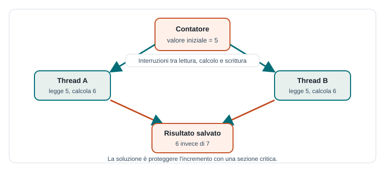

Capitoletto 2
Condivisione delle risorse
Il vantaggio della concorrenza diventa un problema quando più attività usano gli stessi dati o gli stessi dispositivi. Per scrivere software corretto bisogna capire quali risorse sono condivise e proteggere le operazioni che non possono sovrapporsi.
Obiettivi della lezione
- Riconoscere dati, file, periferiche e servizi condivisi.
- Spiegare che cos'è una race condition.
- Individuare una sezione critica in un algoritmo.
- Comprendere il principio della mutua esclusione.
- Scrivere semplici regole per ridurre gli errori concorrenti.
Che cos'è una risorsa condivisa
Una risorsa condivisa è qualunque elemento usato da più attività: una variabile, una lista, un file, una stampante, una connessione, una tabella di database o una periferica. La condivisione è utile perché permette collaborazione e risparmio di memoria, ma richiede regole.
Il problema nasce quando due attività eseguono operazioni non indipendenti. Leggere un dato può essere innocuo; leggerlo, modificarlo e salvarlo richiede invece attenzione, perché un'altra attività potrebbe intervenire nel mezzo.
| Risorsa | Uso concorrente possibile | Problema tipico |
|---|---|---|
| Variabile contatore | Più thread incrementano lo stesso valore. | Aggiornamenti persi. |
| File di log | Più processi scrivono righe nello stesso file. | Righe mescolate o incomplete. |
| Database | Più utenti modificano lo stesso record. | Dati incoerenti o sovrascritti. |
| Stampante | Più applicazioni inviano documenti. | Ordine non controllato senza coda. |
Race condition
Una race condition si verifica quando il risultato dipende dall'ordine con cui attività concorrenti vengono eseguite. L'ordine può cambiare da un'esecuzione all'altra, perché lo scheduler decide quando sospendere e riprendere processi o thread.

contatore = 5
Thread A: legge contatore -> 5
Thread B: legge contatore -> 5
Thread A: calcola 5 + 1 e salva -> 6
Thread B: calcola 5 + 1 e salva -> 6
Risultato atteso: 7
Risultato ottenuto: 6Operazioni atomiche
Un'operazione è atomica quando viene eseguita come un tutto indivisibile: nessun'altra attività può osservarla o interromperla a metà. Molte istruzioni che sembrano semplici in realtà sono composte da più passi.
L'istruzione contatore = contatore + 1 contiene almeno tre azioni: leggere il valore, sommare uno, scrivere il nuovo valore. Se due thread si alternano tra questi passi, il risultato può essere sbagliato.
Sezione critica
Una sezione critica è una parte di programma che accede a una risorsa condivisa e deve essere eseguita da una sola attività alla volta. Individuare le sezioni critiche è il primo passo per correggere un programma concorrente.
// Sezione non critica
prepara_dati()
// Sezione critica: modifica una risorsa condivisa
entra_nella_sezione_critica()
contatore = contatore + 1
esci_dalla_sezione_critica()
// Sezione non critica
mostra_risultato()La sezione critica deve essere più breve possibile. Se protegge troppo codice, il programma diventa lento; se protegge troppo poco, la risorsa resta esposta a errori.
Mutua esclusione
La mutua esclusione garantisce che una sola attività alla volta entri nella sezione critica. Gli strumenti più comuni sono lock, mutex e semafori. Il loro compito è semplice da dire ma delicato da progettare: chi entra blocca l'accesso, chi esce lo libera.
| Requisito | Significato | Perché è importante |
|---|---|---|
| Mutua esclusione | Solo un'attività nella sezione critica. | Evita modifiche simultanee incoerenti. |
| Progresso | Se la risorsa è libera, qualcuno deve poter entrare. | Evita attese inutili. |
| Attesa limitata | Nessuna attività deve aspettare per sempre. | Riduce il rischio di starvation. |
Esempio scolastico: prenotazioni del laboratorio
Due docenti provano a prenotare lo stesso laboratorio alla stessa ora. Se il sistema controlla la disponibilità e poi salva la prenotazione senza protezione, entrambi potrebbero leggere "libero" e salvare due prenotazioni incompatibili.
- Docente A controlla: laboratorio libero.
- Docente B controlla: laboratorio ancora libero.
- Docente A salva la prenotazione.
- Docente B salva una prenotazione sovrapposta.
La sezione critica comprende il controllo della disponibilità e il salvataggio. Devono essere trattati come un'unica operazione protetta.
Regole pratiche di progettazione
- Riduci il numero di dati condivisi: meno condivisione significa meno rischi.
- Proteggi insieme le operazioni che logicamente formano un unico aggiornamento.
- Non tenere un lock mentre esegui operazioni lente come rete o input utente.
- Documenta quali risorse sono condivise e quale meccanismo le protegge.
- Prova il programma più volte e con carichi diversi: gli errori concorrenti non compaiono sempre.
Esercizi guidati
- Trova una sezione critica in un programma che gestisce il saldo di un conto.
- Spiega perché due incrementi simultanei di un contatore possono produrre un solo incremento effettivo.
- Disegna una sequenza di eventi in cui due utenti prenotano la stessa risorsa.
- Scrivi tre esempi di risorse condivise in un'applicazione web scolastica.
Domande con risposta semplice
Che cos'è una race condition?
È un errore che dipende dall'ordine imprevedibile con cui attività concorrenti leggono e modificano dati condivisi.
Che cos'è una sezione critica?
È una parte di codice che accede a una risorsa condivisa e deve essere eseguita da una sola attività alla volta.
Perché la sezione critica deve essere breve?
Perché mentre una attività la occupa, le altre devono aspettare. Una sezione critica troppo lunga riduce prestazioni e reattività.
Per ripassare
Quando studi una risorsa condivisa chiediti sempre: chi la usa, quali operazioni la modificano, quale parte deve essere atomica e quale meccanismo garantisce la mutua esclusione.